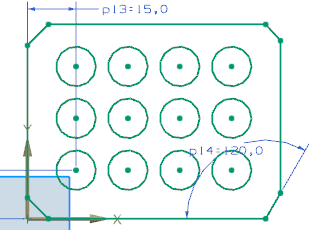
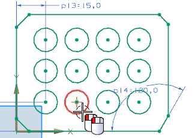
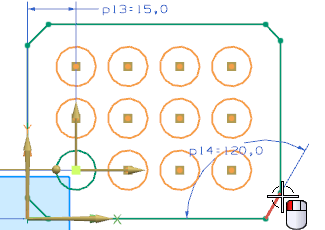
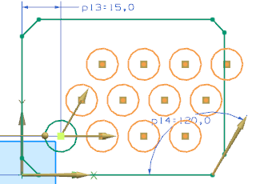
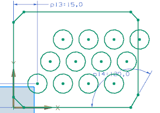
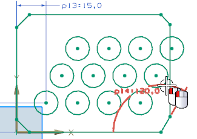
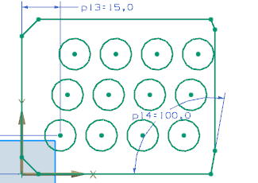

选择工具→表达式。
NX 已经以 Pattern_pxx 的格式为各个方向的数量和节距创建了表达式。
选择 Pattern_p15，在公式输入框中键入4并回车。
将其它表达式更改为下列值：
Pattern_p16 = 16
Pattern_p18 = 3
Pattern_p19 = 16
点击确定以完成表达式更改。

双击阵列中的其中一个圆以进行阵列编辑。

点击选择方向 2组中的选择线性对象以编辑方向矢量。
选择草图右下角的斜直线。

阵列将使用新的方向对象更新。

点击确定。

双击角度尺寸 p14=120并编辑它的值以更改方向 2的角度。


不保存关闭部件。